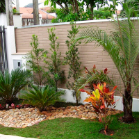
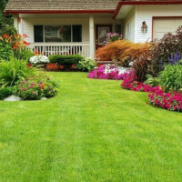
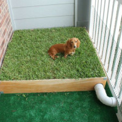
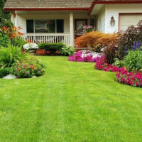
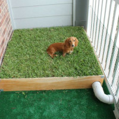

São Carlos
A grama São Carlos é uma das melhores opções para quem deseja um gramado verde e saudável. Ela possui uma alta resistência à seca e ao calor, o que a torna ideal para regiões com clima quente e seco.

Além disso, sua textura fina e macia é perfeita para crianças brincarem e animais de estimação se divertirem. Outro ponto positivo é a sua capacidade de se recuperar rapidamente de danos causados por pisoteio ou corte, garantindo assim um gramado sempre bonito e bem cuidado.
A Gram São Carlos também é resistente a pragas e doenças, o que garante menos custos com manutenção. Em resumo, a grama São Carlos é uma excelente escolha para quem deseja um gramado verde, saudável e fácil de manter.
 


